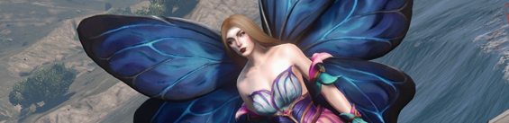
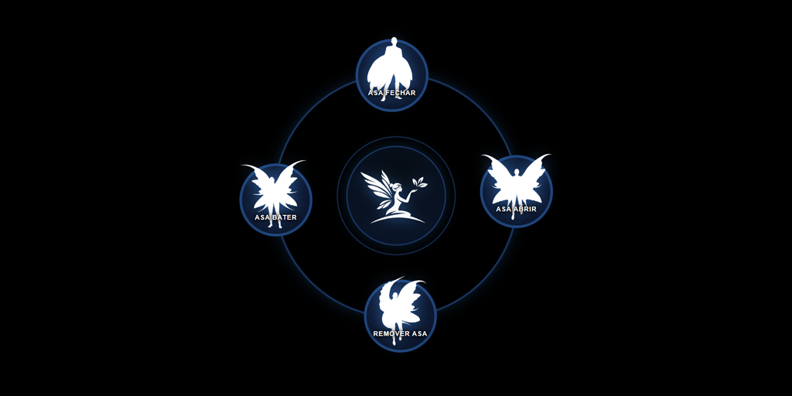
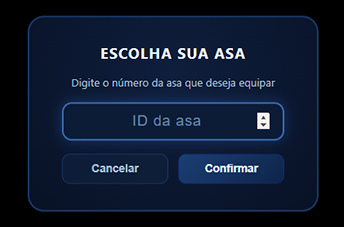
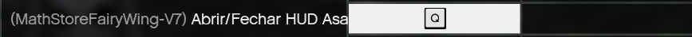

Le système complet d'ailes de fée pour FiveM, avec HUD intégré, système de vol et callbacks de permission avancés.
Le MathStore Fairy Wing V7 est une resource avancée d'ailes de fée pour FiveM qui inclut des ailes animées, un système de vol, un HUD radial interactif et des callbacks de permission avancés.
30 couleurs d'ailes avec des animations et plusieurs états configurables.
Interface interactive pour contrôler toutes les fonctions sans avoir à mémoriser des commandes.
Système de permissions personnalisable. Restreignez par groupe, objet, VIP ou toute autre logique.
Le Fairy Wing V7 dispose d'un HUD radial complet qui permet de contrôler toutes les fonctions de la resource de manière visuelle et intuitive. Pour l'ouvrir, utilisez la commande configurée ou la touche de raccourci.
Lorsque vous ouvrez le HUD pour la première fois (sans rien équipé), le menu initial apparaît avec l'option centrale :

En cliquant sur n'importe quelle option, un panneau apparaîtra pour que vous saisissiez l'ID (couleur) souhaité.

Après avoir équipé les ailes, le HUD radial complet s'affiche avec 4 boutons pour tout contrôler :
| Bouton | Fonction |
|---|---|
| 01 — FERMER LES AILES | Ferme les ailes (animation au sol) |
| 02 — OUVRIR LES AILES | Ouvre les ailes (animation au sol) |
| 03 — PRENDRE AILES / RETIRER AILES | Bascule : équipe ou retire les ailes |
| 04 — BATTRE LES AILES | Bat les ailes (animation au sol) |
Le Fairy Wing V7 prend en charge les raccourcis clavier natifs de FiveM. Le joueur peut configurer la touche dans les paramètres du jeu pour ouvrir le HUD sans taper de commande.
Le joueur peut configurer les touches dans les paramètres du GTA V sous Paramètres → Clavier → FiveM et chercher l'option de la resource.

Dans les paramètres, vous trouverez l'option (MathStoreFairyWing-V7) Ouvrir/Fermer HUD Wings. Le nom du dossier de la resource ne peut pas être modifié, il apparaîtra donc toujours MathStoreFairyWing-V7 suivi de la description de l'action.
| Action | Par défaut | Description |
|---|---|---|
| Basculer Ailes | Aucune |
Ouvrir/fermer les ailes |
| Vol | Désactivé |
Activer/désactiver le mode de vol |
| HUD | Aucune |
Ouvrir/fermer le HUD radial |
/hud7 pour ouvrir le HUD et de créer un bind manuel, mais la configuration via le GTA est plus pratique.
Les joueurs qui quittent le serveur ou subissent un crash verront leurs ailes supprimées automatiquement. Cela évite que des objets orphelins restent dans le monde sans propriétaire.
/asaslimpar7 ou /asaslimpar27 pour les nettoyer manuellement.
Toutes les commandes peuvent être renommées par l'administrateur du serveur dans le fichier de configuration. Ci-dessous figurent les noms par défaut.
/asas7 5
config.lua. Les noms ci-dessus sont ceux par défaut.